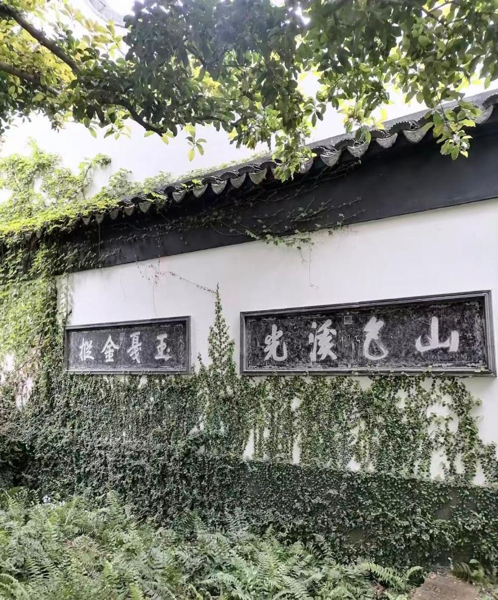
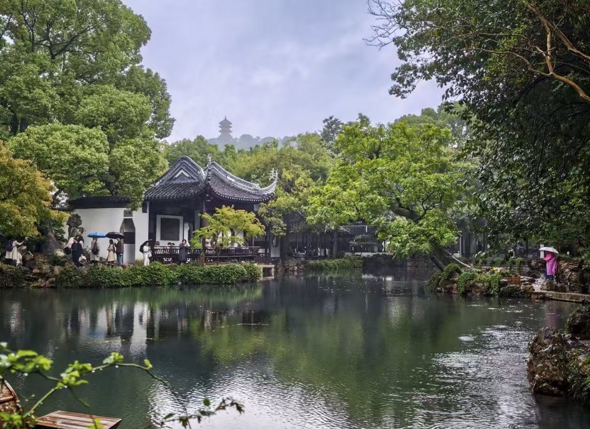
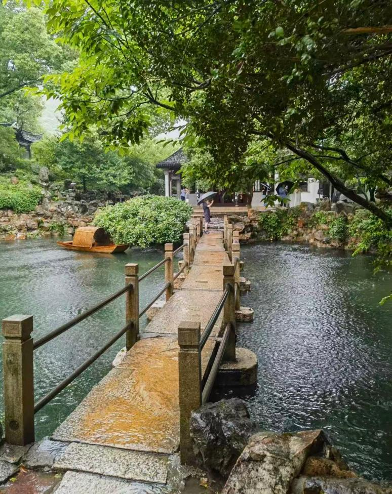
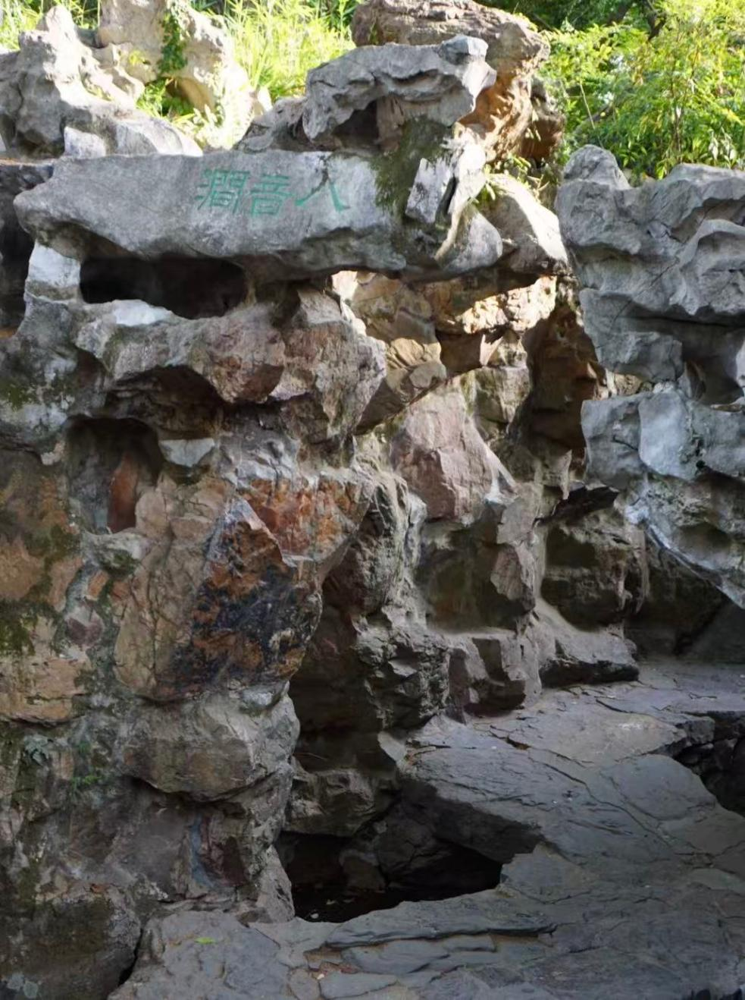
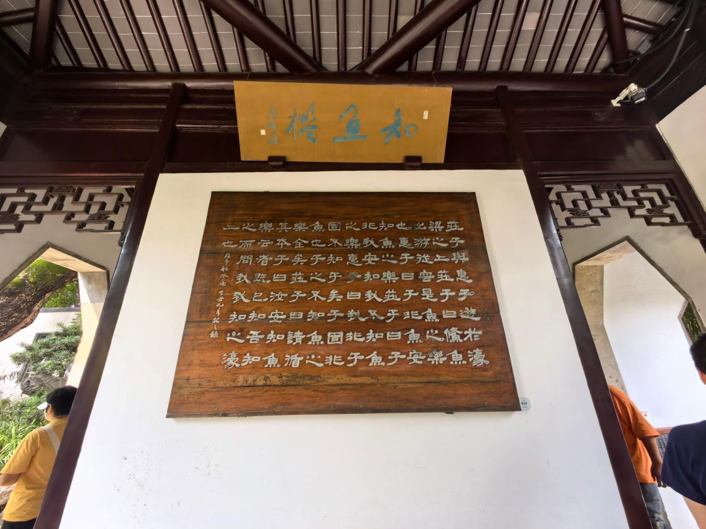
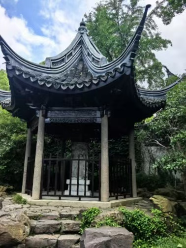
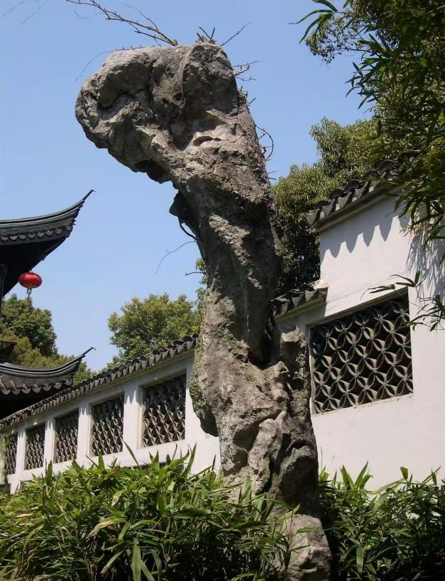

寄畅园简介 Introduction of Jichang Garden
寄畅园，中国园林“五块金牌”之首，江南四大名园之一，坐落于无锡惠山东麓。明代正德年间由秦金始建，最初名为“凤谷行窝”；后来秦耀重新修葺此园，取王羲之“寄畅山水阴”的诗意，定名寄畅园。
As the first of the "five gold medals" of Chinese gardens, Jichang Garden ranks among the four famous gardens in Jiangnan. It lies at the eastern foot of Huishan Mountain in Wuxi. First built by Qin Jin during the Zhengde reign of the Ming Dynasty under the name "Fenggu Xingwo", it was later reconstructed by Qin Yao, who renamed it "Jichang Garden" inspired by Wang Xizhi’s poetic line "Jichang Shanshui Yin".
清代康熙、乾隆两位帝王各六次南巡，几乎每次都亲临寄畅园，题写匾额、赋诗、改名、镌刻碑石。寄畅园也从一座私家山麓别墅，转变为拥有帝王题咏光环的江南名园范本。园门悬挂的“寄畅园”匾额为乾隆御笔；美人石被乾隆改名为“介如峰”；御碑亭保存有乾隆御笔诗碑与《介如峰图》；卧云堂处同时悬挂康熙题写的“山色溪光”与乾隆题写的“玉戛金枞”，形成康乾两朝御笔并存的独特历史景观。
Emperors Kangxi and Qianlong of the Qing Dynasty each made six southern inspections and nearly every visit included a stop at Jichang Garden, leaving inscribed plaques, poems, renamed scenic spots and stone steles. Evolving from a private mountain‑foot villa, it became a model Jiangnan garden celebrated by imperial literary works. The gate plaque "Jichang Garden" was hand‑written by Emperor Qianlong. The Beauty Stone was renamed "Jierufeng". The Imperial Tablet Pavilion houses Qianlong’s poetry stele and the "Painting of Jierufeng". In Woyuntang, "Shanse Xiguang" by Kangxi and "Yujia Jincong" by Qianlong hang side‑by‑side, presenting a rare historical scene with imperial calligraphy from two dynasties.
历史典故与名号源流 Historical Allusions & Origin of Names
1.1 凤谷行窝：初名有考究 1.1 Fenggu Xingwo: The Original Name
寄畅园最初并不叫寄畅园，原名凤谷行窝。园主秦金号凤山，“凤谷”呼应主人名号，也对应惠山山谷的地貌；“行窝”指别业、临时居所，带有退居山林、随遇而安的意味。从名字可以看出，这里最早是官宦归隐的别墅，并非后世声名显赫的御题名园。
Jichang Garden was originally named Fenggu Xingwo instead of its present‑day title. Qin Jin, the garden owner, styled himself Fengshan. "Fenggu" echoes his courtesy name as well as the valley landscape of Huishan Mountain. "Xingwo" means a secondary residence or temporary dwelling, implying retiring into nature and accepting one’s circumstances. This name reveals that it was first a retreat villa for officials, rather than the renowned imperial‑honoured garden it later became.
1.2 寄畅：从“暂居”到“寄畅山水” 1.2 Jichang: From Temporary Dwelling to Spiritual Landscape
秦耀罢官回到家乡，重新改造这座园林，化用王羲之诗句“取欢仁智乐，寄畅山水阴”，命名为寄畅园。园名的改动，提升了园林的精神意趣，从一处临时休憩的居所，变为寄托情怀、安顿身心的精神园林，这也是读懂寄畅园气质的关键。
After being dismissed from official post, Qin Yao returned home and reconstructed the garden. He drew inspiration from Wang Xizhi’s verse "taking joy in benevolence and wisdom, finding comfort amid mountains and waters" and named it Jichang Garden. Renaming elevated its spiritual connotation, transforming it from a temporary lodging into a spiritual garden for emotional comfort and inner peace. This renaming holds the key to understanding the temperament of Jichang Garden.
1.3 康乾御笔：皇帝为何反复到访 1.3 Imperial Inscriptions: Why Emperors Visited Repeatedly
- 寄畅园匾额：Jichang Garden Plaque: 园门悬挂匾额为乾隆御笔，极大提升了园林的公共文化地位。 The gate plaque was written by Emperor Qianlong, greatly elevating the garden’s cultural status.
- 美人石改名介如峰：Beauty Stone renamed Jierufeng: 乾隆南巡见到美人石，欣赏它耿介独立的姿态，赐名“介如峰”，并且作诗、绘图，镌刻存放在御碑亭。 During his southern tour, Qianlong admired the stone’s upright and solitary demeanour, renamed it Jierufeng, composed poems, drew illustrations and ordered them carved and preserved in the Imperial Tablet Pavilion.
- 御碑亭：Imperial Tablet Pavilion: 亭内石碑镌刻乾隆御制诗文和介如峰图，完整留存帝王命名、赋诗、刻石、园林声名远播的实物证据。 The stele inside bears Qianlong’s poems and the painting of Jierufeng, offering complete physical evidence of the whole process: imperial naming, poetry‑writing, stone‑carving and garden‑fame‑spreading.
- 卧云堂御笔对读：Paired imperial calligraphy in Woyuntang: 康熙题“山色溪光”赞美山林水色，乾隆题“玉戛金枞”描摹水石撞击的悦耳声响，两代帝王墨迹并列，历史氛围感浓厚。 Kangxi’s "Shanse Xiguang" praises natural scenery; Qianlong’s "Yujia Jincong" depicts the melodious sound of water striking rocks. Calligraphy from two emperors hangs side‑by‑side, creating powerful historical atmosphere.
- 仿建惠山园：Imitation — Huishan Garden: 乾隆在清漪园之内仿照寄畅园修建惠山园，也就是今天颐和园谐趣园，足以证明寄畅园是皇家认可的江南园林范本。 Qianlong built Huishan Garden (present‑day Xiequ Garden in Summer Palace) copying Jichang Garden in Qingyi Garden, proving Jichang Garden was a royal‑acknowledged model of Jiangnan gardens.

导览地图与公告栏 Tour Map & Notice Board
导览地图（点击放大查看） Tour Map (Click to enlarge)

地址：无锡惠山东麓，锡惠公园内 Address: Eastern foot of Huishan Mountain, inside Xihui Park, Wuxi
公告栏 Notice Board
开放时间 Opening Hours
以锡惠公园景区现场公告为准。 Subject to on‑site notice of Xihui Park scenic area.
门票政策 Ticket Policy
包含于锡惠公园景区门票，优待政策参照景区官方公告。 Included within Xihui Park admission ticket. Preferential policies refer to official scenic‑area announcements.
园池基础概况 Basic Overview of Garden & Ponds
4.1 基础信息 4.1 Basic Information
- 地理位置： Location: 无锡惠山东麓，锡惠公园内 Eastern foot of Huishan Mountain, Xihui Park, Wuxi
- 始建： First built: 明正德年间，秦金营建凤谷行窝 Zhengde reign of Ming Dynasty, Qin Jin built Fenggu Xingwo
- 改名： Renamed: 秦耀改筑园林，定名寄畅园 After reconstruction by Qin Yao, named Jichang Garden
- 园林地位： Garden Status: 中国园林“五块金牌”之首，江南四大名园之一，和瞻园、艺圃、留园齐名。 First among "five gold medals" of Chinese gardens; one of four great Jiangnan gardens, together with Zhan Garden, Yipu Garden and Liu Garden.
- 核心特色： Core Features: 巧借惠山山景，引天下第二泉泉水入园；留存大量康乾御笔；以水系串联全园，是珍贵的明代山麓别墅园林。 Skillful borrowing of Huishan scenery; diverting water from the Second‑Best‑Spring into garden; abundant imperial calligraphy relics from Kangxi & Qianlong; water‑linked layout, a precious Ming‑Dynasty mountain‑foot villa‑style garden.
4.2 空间布局与山水骨架 4.2 Spatial Layout & Landscape Framework
寄畅园以锦汇漪作为全园中心，整体南北长、东西狭窄。中部西岸鹤步滩和东岸知鱼槛隔水相对，把水面分隔成若分若合的南北两片水域。北端依靠七星桥与廊桥再次分割水面，拓展空间景深；南边水面以聚拢为主，北边水面偏向疏朗曲折，水岸线条婉转多变。
Centered on Jinhuiyi Pond, Jichang Garden stretches longer from north to south while narrow from east to west. Hebutan Beach on west bank faces Zhiyu Sill on east bank across water, dividing the pond into inter‑connected northern and southern water zones. At northern end, Seven‑Star Bridge and covered bridge further partition water to deepen spatial depth. The southern water area is compact and concentrated; northern area is open with winding, varied shorelines.
整座园林以借景为造园灵魂：向西收纳惠山山景，向东收纳锡山龙光塔，山影、塔影、亭榭倒影全部倒映在锦汇漪池水中。园内叠山出自造园名家张南垣、张轼，八音涧便是黄石叠山的代表作品。
Scenery borrowing serves as the core design spirit. It borrows views of Huishan Mountain on the west and Longguang Pagoda on Xishan Hill on the east. Mountain silhouette, pagoda shadow and reflections of pavilions all mirror on Jinhuiyi. Rock‑stacking works were completed by famous garden designers Zhang Nanyuan and Zhang Shi. Bayinjian Ravine stands as their representative work of yellow‑stone rockwork.

核心景致详解 Detailed Introduction to Core Sights
5.1 七星桥 5.1 Seven‑Star Bridge
七星桥横亘锦汇漪水面，是一座贴近水面的石板平桥。桥面由七块黄石板（金山石板）平铺而成，低平贴水，古朴简约。桥名直接来源于七块石板，对应天上北斗七星。
Spanning across Jinhuiyi Pond, Seven‑Star Bridge is a low stone slab bridge close to water surface. Its deck consists of seven yellow‑stone (Jinshan stone) slabs laid flat upon waves, plain and archaic. Its name derives from these seven slabs symbolizing the Big Dipper constellation.
更深一层，园主秦耀借这座桥抒发胸襟：虽然官场失意，但是在星夜水天之间，立足清波之上，仰望北斗，仿佛飘然出世。乾隆诗句“一桥飞架琉璃上”，咏叹的就是七星桥。它不只是通行小桥，把星象意象和园主退隐的心境融为一体。
On a deeper level, garden‑owner Qin Yao expressed his inner world through this bridge. Frustrated in official career, he would stand by clear water under starry sky, gazing toward Big Dipper as if transcending mortal world. Qianlong’s poetic line "A bridge flies over glass‑like water" describes exactly this bridge. More than merely a passageway, it unites astronomical imagery with the owner’s reclusive state of mind.

5.2 八音涧 5.2 Bayinjian (Eight‑Tone Ravine)
八音涧旧名悬淙涧，又叫三叠泉，全部使用黄石堆叠而成。它接引天下第二泉的泉水，暗流流入园中，顺着曲折涧道流淌。受落差、弯道、岩石形态影响，泉水叮咚作响，声调高低错落。
Formerly named Xuancongjian or Sandie Spring, Bayinjian is fully constructed of yellow stones. It channels underground water from the Second‑Best‑Spring into the garden. Flowing through winding rock passages, water produces varied, tinkling sounds shaped by drops, bends and rock contours.
“八音”取自古代八类乐器：金、石、丝、竹、匏、土、革、木。造园者认为涧中流水，仿佛八种乐器一同演奏，奏响天然高山流水乐章。乾隆十分喜爱这里水声，题字“玉戛金枞”，后来悬挂于卧云堂，和康熙“山色溪光”成对。八音涧把听觉体验融入园林游览，水声不再是背景，本身就是景观。
"Bayin" refers to eight ancient instrument categories: metal, stone, silk, bamboo, gourd, earth, leather and wood. Designers regarded flowing water here as natural ensemble of eight instruments performing the melody of High‑Mountains‑and‑Flowing‑Water. Fascinated by the aquatic sound, Qianlong inscribed "Yujia Jincong", later hung in Woyuntang paired with Kangxi’s "Shanse Xiguang". Bayinjian integrates hearing into garden appreciation; running water sound is no longer background but the attraction itself.

5.3 知鱼槛 5.3 Zhiyu Sill (Know‑the‑Fish Pavilion)
知鱼槛是方形亭式水榭，坐落锦汇漪水边，三面环水。名字出自《庄子·秋水》濠梁之辩：庄子曰“鲦鱼出游从容，是鱼之乐也”，惠子反问“子非鱼，安知鱼之乐”，庄子回“子非我，安知我不知鱼之乐”。
Zhiyu Sill is a square waterside pavilion surrounded by water on three sides on Jinhuiyi Pond. Its name originates from the famous "Debate at Hao‑River Bridge" in Zhuangzi·Qiushui. Zhuangzi commented: "The minnows swim leisurely; such is the joy of fish." Huizi questioned: "You are not fish, how can you know fish’s joy?" Zhuangzi retorted: "You are not me, how can you know I do not know fish’s joy?"
取名有两层含义：实景上，水榭探向水面，最适宜凭栏观鱼；心境上，园主秦耀仕途沉浮，辞官归隐，借“知鱼之乐”寄托自我，他的诗句写有“焉知我非鱼，此乐思蒙庄”。知鱼槛不只是观鱼的亭子，借用庄子典故安放文人退隐之后闲适自在的精神追求。
The name carries two meanings. Practically, the pavilion extends over water, perfect for watching fish. Spiritually, after ups‑and‑downs in officialdom, retired owner Qin Yao identified himself with "joy of fish". His verse reads: "Who knows I am not fish; I share this joy with Master Zhuang". More than merely a fish‑viewing spot, it embodies literati’s yearning for carefree reclusion via Zhuangzi’s philosophical allusion.

5.4 御碑亭与介如峰 5.4 Imperial Tablet Pavilion & Jierufeng
御碑亭因保存乾隆御制诗碑得名，位于锦汇漪南侧，紧邻美人石，也就是介如峰。石碑镌刻乾隆御笔诗文与《介如峰图》，完整记录乾隆将美人石改名为介如峰的故事。
Named for preserving Qianlong’s poetic stele, Imperial Tablet Pavilion sits on southern bank of Jinhuiyi, next to the Beauty Stone (Jierufeng). The stele is carved with Qianlong’s poems and the "Painting of Jierufeng", fully recording the story of Qianlong renaming the Beauty Stone.
美人石本是一块形态奇崛的太湖石。乾隆欣赏石头耿介孤高、傲然独立的姿态，赐名“介如峰”。“介”代表正直耿介，一块天然奇石就此被纳入帝王题咏体系，成为带有御赐身份的文化符号。御碑亭以诗、书、画、刻四重形式留存历史，是寄畅园帝王题咏文化最重要的实物见证。
Beauty Stone is a grotesque Taihu‑Lake rock. Qianlong admired its upright, aloof and independent bearing and granted it the name Jierufeng. "Jie" stands for integrity and moral rectitude. This natural rock was incorporated into imperial literary system and turned into an imperial‑endorsed cultural symbol. Combining poetry, calligraphy, painting and stone carving, the pavilion serves as the most important material witness of imperial‑eulogizing culture at Jichang Garden.


园林文化主题 Themes of Garden Culture
寄畅园的价值不局限于亭台池山本身。它示范江南文人园林，如何通过借景、叠山理水、文人园居、帝王题咏、跨地域仿建，成为一套可以传播、借鉴、不断被解读的文化范式。
The value of Jichang Garden goes far beyond pavilions, ponds and rockeries. It demonstrates how Jiangnan literati gardens, through scenery‑borrowing, rock‑stacking & water‑management, scholar‑officer dwelling, imperial inscriptions and cross‑regional imitations, evolved into a reproducible, interpretable and spreadable cultural paradigm.
6.1 借景：把整座惠山纳入园中 6.1 Borrowed Scenery: Embracing the Whole Huishan Mountain
寄畅园最重要的文化贡献，把“借景”从造园技巧升华为审美境界。园林占地面积并不大，向西借惠山，向东借锡山龙光塔，山影塔影全部收进锦汇漪池水之中。园林追求的不是占有山水，而是收纳山水意境，践行中国古典园林“虽由人作，宛自天开”的至高理想。
Jichang Garden’s most important cultural contribution elevates "scenery‑borrowing" from mere craft to an aesthetic realm. Though small‑scaled, it borrows Huishan view from west and Longguang Pagoda from Xishan Hill on east; mountain and pagoda silhouettes are fully absorbed into Jinhuiyi Pond. Instead of possessing landscape physically, it captures its artistic conception, embodying the supreme ideal of classical Chinese garden: "Though man‑made, it appears naturally‑born".
6.2 叠山理水：一涧藏八音 6.2 Rock‑stacking & Water‑arrangement: One Ravine Holds Eight Tones
八音涧代表明清江南园林叠山理水的高峰。不只是堆叠好看假山，而是引导山石间流水发出声响，将听觉纳入园林审美。水不光可以观赏，更可以聆听；山石不止可供伫立，还可以如同乐器一般“奏鸣”。这套造园思路，直接影响皇家园林对寄畅园的仿制。
Bayinjian represents the peak of rock‑water design in Ming‑Qing Jiangnan gardens. Rather than merely building ornamental rockeries, designers guided running water among stones to produce sounds, bringing auditory perception into garden aesthetics. Water is not only to behold but also to listen to; rocks do not merely stand static but "resonate" like musical instruments. This design philosophy directly influenced royal‑garden imitations of Jichang Garden.
6.3 文人园居：从“退隐之所”到“精神安顿” 6.3 Literati Dwelling: From Retreat to Spiritual Consolation
从凤谷行窝到寄畅园，从秦金到秦耀，这座园林始终和古代士大夫出仕、归隐的人生选择紧密相连。知鱼槛庄子典故、含贞斋孤松意象、园内大量文人题咏，共同造就“园居即是精神安顿”的传统。园林不是炫耀财富的场所，而是安放失意、寄托志趣、守护精神自由的空间。
From Fenggu Xingwo to Jichang Garden, from Qin Jin to Qin Yao, this garden is tightly bound to ancient scholar‑officials’ choices between official service and reclusion. The Zhuangzi allusion at Zhiyu Sill, solitary‑pine metaphor in Hanzhen Study and numerous literati inscriptions together shaped the tradition: garden dwelling equals spiritual settlement. A garden is not a showcase for wealth, but space to accommodate frustrations, aspirations and spiritual freedom.
6.4 帝王题咏与名园传播：一座名园如何出圈 6.4 Imperial Inscriptions & Garden Fame: How a Private Garden Became Nation‑Famous
康熙、乾隆各六次南巡，几乎次次到访寄畅园，题匾、赋诗、改名、刻碑。乾隆甚至直接在御苑仿造寄畅园。帝王的推崇，让一座江南私家园林上升为全国知名的文化样本。
During their six southern inspections each, Kangxi and Qianlong almost always visited Jichang Garden, leaving plaques, poems, renamed sights and stone steles. Qianlong even reproduced it within imperial palace gardens. Imperial patronage lifted this private Jiangnan villa into a nationally‑renowned cultural model.
6.5 当代园文化活动 6.5 Modern‑Day Cultural Activities
今天寄畅园属于锡惠公园，延续康乾南巡以来名园和名胜融为一体的格局。游客可以沿着御碑亭→介如峰→卧云堂→锦汇漪→七星桥→八音涧→知鱼槛这条游览路线，完成一条从帝王题咏到文人园居的完整文化游览动线。
Today Jichang Garden belongs to Xihui Park, maintaining the integrated pattern of famous garden‑scenic‑spot inherited since Kangxi‑Qianlong southern tours. Visitors may follow the route: Imperial Tablet Pavilion → Jierufeng → Woyuntang → Jinhuiyi → Seven‑Star Bridge → Bayinjian → Zhiyu Sill, completing a full cultural tour tracing from imperial eulogies to literati reclusive life.